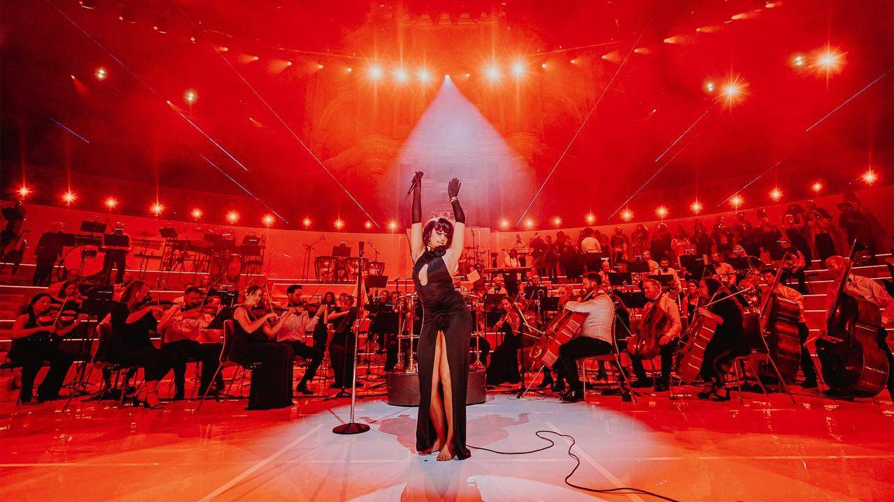
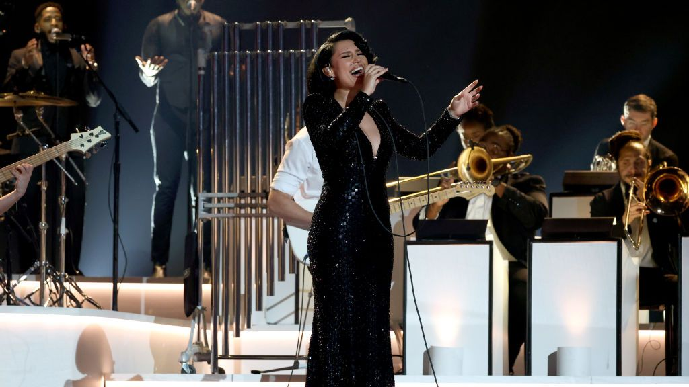
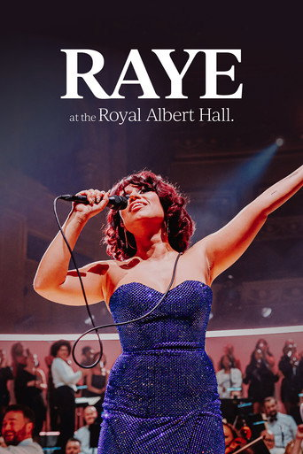

Soul 路 Jazz 路 R&B 路 Orchestral
RAYE
Voice as instrument. Oscar Winning Tears at the Royal Albert Hall 鈥?where soul, orchestra and raw emotion collide.
Scroll to enter 鈫?/div>
OSCAR WINNING TEARS 路 HARD OUT HERE 路 BLACK MASCARA 路 ESCAPISM 路 WORTH IT 路 MY 21ST CENTURY BLUES 路 PRADA 路 BED TIME 路 FLIP A SWITCH 路
OSCAR WINNING TEARS 路 HARD OUT HERE 路 BLACK MASCARA 路 ESCAPISM 路 WORTH IT 路 MY 21ST CENTURY BLUES 路 PRADA 路 BED TIME 路 FLIP A SWITCH 路
After seven years fighting for artistic freedom, RAYE bet on herself 鈥?and won. My 21st Century Blues turned pain into poetry, and the Royal Albert Hall into church.
The journey 路 2014鈥?025
Seven years.
One breakthrough.
2014
Welcome to the Winter
Debut EP released at age 16. A songwriter's promise, still finding her voice behind the scenes.
Songwriting era
2016鈥?022
The label years
Writing hits for others (Beyonc茅, Little Mix, David Guetta) while her own debut was repeatedly delayed. A battle for artistic control that would define her.
Behind the scenes
2023
My 21st Century Blues
Independent debut album. Raw, orchestral, unflinching 鈥?tackling trauma, addiction, and resilience. Oscar Winning Tears becomes the emotional centrepiece.
Breakthrough album
2024
BRIT Awards history
Six BRIT Awards 鈥?most won by any artist in a single night. Album of the Year, Artist of the Year, Song of the Year. A vindication seven years in the making.
Record-breaking
2024
Live at the Royal Albert Hall
A career-defining concert with the Heritage Orchestra. Oscar Winning Tears performed barefoot, in a white corset, under golden light 鈥?the moment everything crystallized.
The performance
2025
Grammy victory
Best R&B Performance for Oscar Winning Tears. The song that started as a vulnerable piano ballad now a Grammy winner, performed on music's biggest stage.
Grammy winner
The defining performance 路 26 September 2023
Oscar WinningTears.
Royal Albert Hall. The Heritage Orchestra. A single spotlight. RAYE barefoot, voice trembling then soaring 鈥?a song about performing pain becomes the performance of a lifetime.
0
Second sustained note (E5)
0
Million Shazams at Grammys
0
Hz vibrato (opera-standard)
1脳
Grammy 路 Best R&B Performance
Live moments
On stage.
Unfiltered.

Royal Albert Hall 路 2023Red light, full orchestra
Oscar Winning TearsWhite corset, golden spotlight

Grammy Awards 路 2025Black sequins, brass band
Audience perspectiveAmong the strings

Concert filmMy 21st Century Symphony
Debut album 路 2023
My 21st
Century Blues.
RAYE's independent debut is a genre-fluid song cycle 鈥?R&B, jazz, soul, and orchestral pop woven into a narrative of survival. From the gospel-tinged Hard Out Here to the devastating Oscar Winning Tears, every track feels like a confession delivered with technical precision.
01Introduction.0:52
02Oscar Winning Tears.4:01
03Hard Out Here.3:38
04Black Mascara.3:50
05Escapism.4:32
06Mary Jane.3:36
Weiyi's selection
Essential
RAYE.
The songs that define the journey 鈥?from raw balladry to orchestral triumph.
Oscar Winning TearsMy 21st Century Blues
Hard Out HereMy 21st Century Blues
Black MascaraMy 21st Century Blues
EscapismMy 21st Century Blues 路 ft. 070 Shake
Worth ItMy 21st Century Blues
Mary JaneMy 21st Century Blues
Bed TimeMy 21st Century Blues
Flip a SwitchMy 21st Century Blues
Pradacass枚 x RAYE x David Guetta
Oscar Winning Tears 鈥?LiveRoyal Albert Hall 路 2023
Worth It 鈥?LiveRoyal Albert Hall 路 2023
Oscar Winning Tears 鈥?Grammy67th Grammy Awards 路 2025
Visitors: --